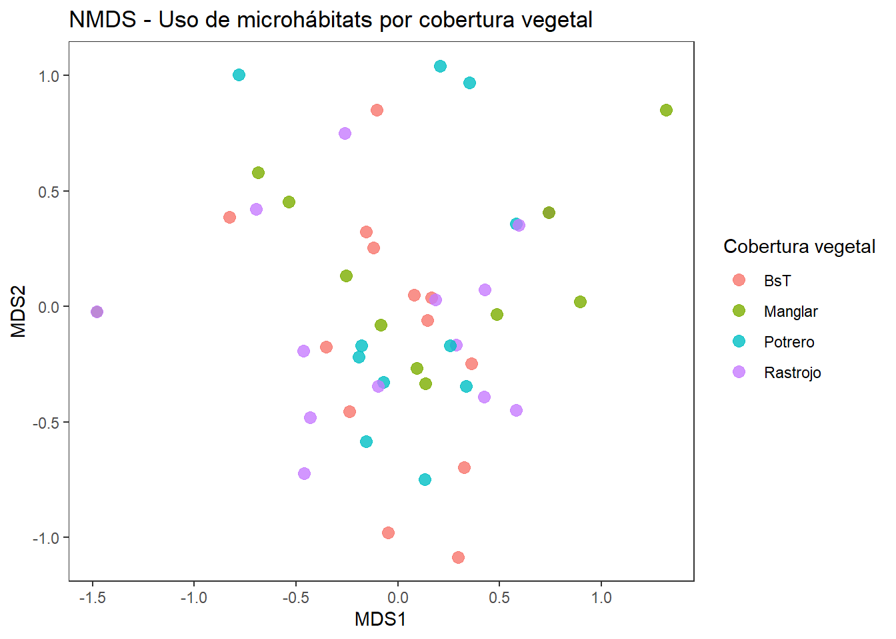
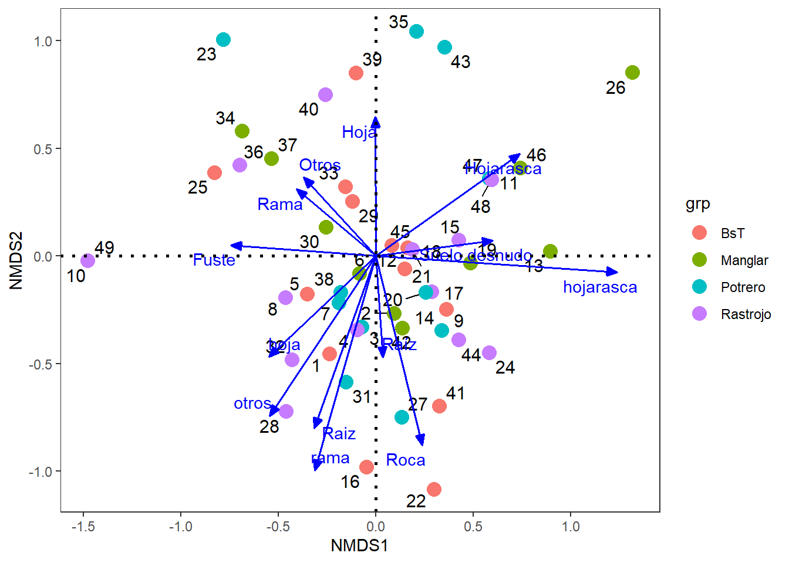
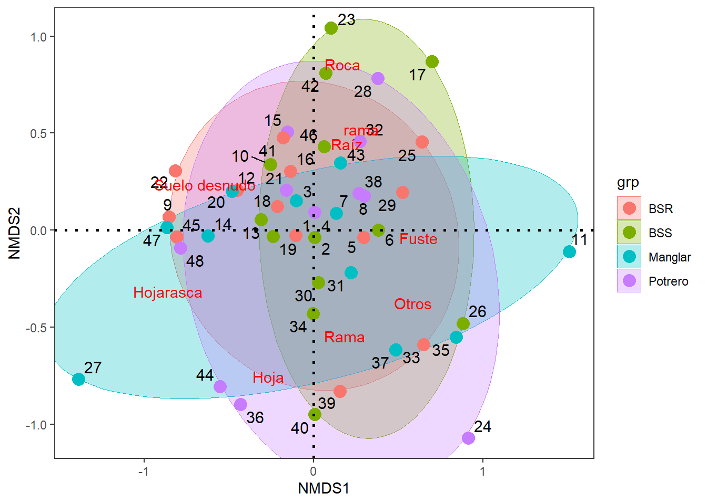
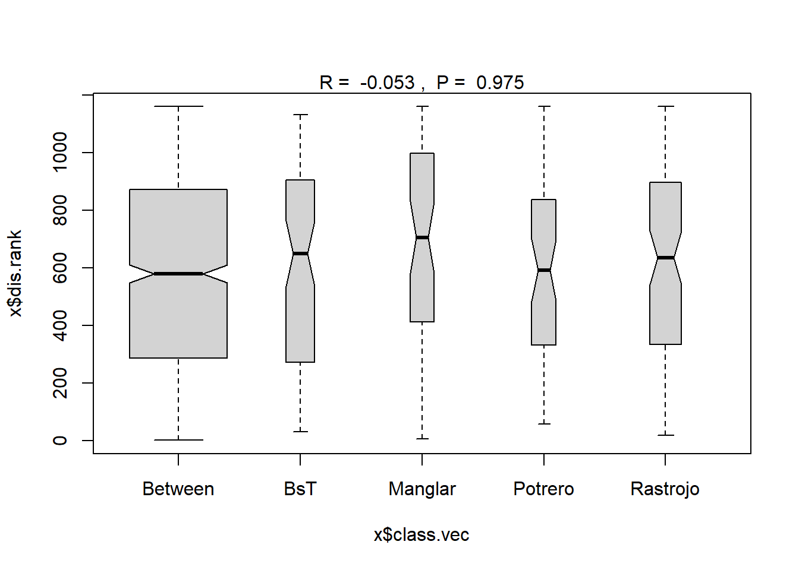

| Especie | Cobertura vegetal | Fuste | Hoja | Hojarasca | Otros | Raiz | Rama | Raíz | Roca | Suelo desnudo | hoja | otros | rama | hojarasca |
|---|---|---|---|---|---|---|---|---|---|---|---|---|---|---|
| Anolis concolor | BsT | 568 | 322 | 434 | 226 | 18 | 316 | 13 | 29 | 28 | 1 | 2 | 1 | 0 |
| Anolis concolor | Manglar | 268 | 31 | 181 | 93 | 9 | 46 | 11 | 27 | 46 | 0 | 0 | 0 | 1 |
| Anolis concolor | Potrero | 369 | 95 | 193 | 141 | 22 | 81 | 31 | 24 | 22 | 0 | 1 | 0 | 0 |
| Anolis concolor | Rastrojo | 801 | 265 | 601 | 160 | 43 | 397 | 70 | 15 | 67 | 0 | 5 | 0 | 0 |
| Aristelliger georgeensis | BsT | 161 | 8 | 24 | 227 | 1 | 10 | 1 | 18 | 0 | 1 | 0 | 0 | 0 |
| Aristelliger georgeensis | Manglar | 98 | 1 | 31 | 58 | 2 | 3 | 0 | 5 | 2 | 0 | 0 | 0 | 0 |
Resumen del Análisis Realizado
Se evaluó si la composición del uso de microhábitats por parte de las especies de herpetofauna, varía significativamente entre diferentes coberturas vegetales (bosque seco, rastrojo, potrero, manglar). La hipótesis principal fue que la distribución de especies entre microhábitats (sustratos) cambia en función del tipo de cobertura vegetal. Para ello, se construyó una matriz de frecuencias de especies por tipo de sustrato dentro de cada cobertura, y se aplicaron los siguientes métodos multivariados:
NMDS (Escalamiento multidimensional no métrico): permitió visualizar gráficamente los patrones de uso del microhábitat, mostrando un alto solapamiento entre coberturas vegetales, por lo cual no hay evidencias gráficas para validar la hipótesis.
ANOSIM (Análisis de Similitudes): indicó un estadístico R negativo (R = -0.053), lo cual sugiere que la variabilidad dentro de los grupos (coberturas) es mayor o similar a la que existe entre ellos. Este resultado no es ecológicamente interpretable y puede reflejar una falta de estructura clara entre grupos, entre otros aspectos que se describen en el análisis.
PERMANOVA (Manova permutacional): confirmó la ausencia de diferencias significativas en la composición del uso de microhábitats entre coberturas, reforzando la conclusión obtenida por ANOSIM.
SIMPER (Análisis de porcentaje de similitud): Se utilizó para identificar los microhábitats (sustratos) que contribuyen más a la disimilitud entre pares de coberturas. Para cada contraste (por ejemplo, bosque seco vs. manglar), el análisis se usó para evaluar los microhábitats que más explicaron la diferencia en composición (valores p <0.05), el porcentaje de contribución de cada sustrato a la disimilitud total, la disimilitud promedio entre coberturas (average dissimilarity) y la desviación estándar, que indica la consistencia de las diferencias evaluadas.
Procedimiento para la evaluación realizada
Paso 1. Tabulación inicial de los datos.
En la Tabla 1 se muestra una matriz general (tabla_microhabitat) que combina la frecuencia de presencias de especies de herpetos, por coberturas vegetales y sustratos o microhábitats.
Cada fila representa la frecuancia en la combinación de la presencia de cada especie más la cobertura vegetal. Las columnas también representan a las frecuencias de la combinación anterior, en los distintos microhábitats (Sustratos). Los valores también representan a los conteo de veces que la especie fue registrada en ese microhábitat bajo cada cobertura vegetal.
Paso 2. Frecuencia de datos por cada cobertura vegetal (grupos).
En la Tabla 2 (conteo_grupos) se muestra la frecuencia de filas (combinaciones de especies + coberturas de Tabla 1) que hay por cada cobertura vegetal (tabla_microhabitat).
| Cobertura vegetal | n |
|---|---|
| BsT | 13 |
| Manglar | 11 |
| Potrero | 11 |
| Rastrojo | 14 |
Paso 3. Frecuencia por cada cobertura y microhábitats.
La Tabla 3 (tabla_filtrada) es una versión reducida de tabla_microhabitat (Tabla 1), que: Elimina las combinaciones de especie + cobertura vegetal que ocurren solo una vez. Para este caso no se elimina ninguna especie. Este filtro es necesario porque métodos como ANOSIM requieren replicación dentro de cada grupo (más de una fila por nivel de cobertura vegetal).
| Especie | Cobertura vegetal | Fuste | Hoja | Hojarasca | Otros | Raiz | Rama | Raíz | Roca | Suelo desnudo | hoja | otros | rama | hojarasca |
|---|---|---|---|---|---|---|---|---|---|---|---|---|---|---|
| Anolis concolor | BsT | 568 | 322 | 434 | 226 | 18 | 316 | 13 | 29 | 28 | 1 | 2 | 1 | 0 |
| Anolis concolor | Manglar | 268 | 31 | 181 | 93 | 9 | 46 | 11 | 27 | 46 | 0 | 0 | 0 | 1 |
| Anolis concolor | Potrero | 369 | 95 | 193 | 141 | 22 | 81 | 31 | 24 | 22 | 0 | 1 | 0 | 0 |
| Anolis concolor | Rastrojo | 801 | 265 | 601 | 160 | 43 | 397 | 70 | 15 | 67 | 0 | 5 | 0 | 0 |
| Aristelliger georgeensis | BsT | 161 | 8 | 24 | 227 | 1 | 10 | 1 | 18 | 0 | 1 | 0 | 0 | 0 |
| Aristelliger georgeensis | Manglar | 98 | 1 | 31 | 58 | 2 | 3 | 0 | 5 | 2 | 0 | 0 | 0 | 0 |
Paso 4. Frecuencias por cada microhábitat.
La Tabla 4 relaciona a la frecuencia de especies por microhábitat, filtrada para conservar solo coberturas vegetales con replicación suficiente para evaluarla en el ANOSIM o el permanova.
Esta matriz será la que se utilice en las pruebas de hipótesis multivariadas, solo presenta columnas de sustratos o microhábitats, en formato de presencia/ausencia (o de frecuencias), asegurando que todas sean numéricas. Con esto, quedan sólo con columnas numéricas como “Hojarasca”, “Raíz”, “Fuste”, etc.
| Fuste | Hoja | Hojarasca | Otros | Raiz | Rama | Raíz | Roca | Suelo desnudo | hoja | otros | rama | hojarasca |
|---|---|---|---|---|---|---|---|---|---|---|---|---|
| 568 | 322 | 434 | 226 | 18 | 316 | 13 | 29 | 28 | 1 | 2 | 1 | 0 |
| 268 | 31 | 181 | 93 | 9 | 46 | 11 | 27 | 46 | 0 | 0 | 0 | 1 |
| 369 | 95 | 193 | 141 | 22 | 81 | 31 | 24 | 22 | 0 | 1 | 0 | 0 |
| 801 | 265 | 601 | 160 | 43 | 397 | 70 | 15 | 67 | 0 | 5 | 0 | 0 |
| 161 | 8 | 24 | 227 | 1 | 10 | 1 | 18 | 0 | 1 | 0 | 0 | 0 |
| 98 | 1 | 31 | 58 | 2 | 3 | 0 | 5 | 2 | 0 | 0 | 0 | 0 |
Paso 5. NMDS para ordenar los taxones en las coberturas vegetales
Se usó la matriz de distancia Bray Curtis. El estrés es de 0.19, lo que demuestra una configuración regular de los datos.
Los puntos de la Figura 1 representa a una combinación única de las especies x coberturas vegetales, caracterizada por su perfil o frecencia de uso de sustratos o de microhábitats (ver primera columna de la tabla_filtrada Tabla 3).
En este sentido se pretende visualizar si las combinaciones especie-cobertura se agrupan de manera similar según el uso de microhábitats. Se buscar visualizar si se presentan grupos de puntos del mismo color (misma cobertura vegetal), caso que no ocurre en este ejercicio, por la ausencia de diferencias significtivas que se comprobarán más adelante con el Anosim, permanova y Simper.

La Figura 2 incorpora a los microhábitats como vectores, para visualizar el patrón de ordenación de las combinaciones especie-cobertura en los diferentes grupos. Cabe resaltas que por no existir diferencias entre los grupos (grp) no hay una manera clara de visualizar gradientes.

En la Figura 3 se incorporan elipses, para intentar visualizar diferencias entre los grupos comparados. Al solaparse las elipses, se soporta la prueba de hipótesis que se validará con el anosim y el permanova, en el cual no hay diferencias de los especímenes entre coberturas vegetales.

Paso 6. Realización del ANOSIM.
Con esta técnica multivariada, se busca probar la hipótesis principal de que la distribución de especies entre microhábitats (sustratos) cambia en función del tipo de cobertura vegetal. Se relacionan los grupos de las coberturas vegetales (BsT, Manglar, Potrero y Rastrojo) como grupos para el anosim.
El resultado del ANOSIM, muestra un R negativo (-0.05344).
Call:
anosim(x = distancias, grouping = grupo, permutations = 199)
Dissimilarity: bray
ANOSIM statistic R: -0.05344
Significance: 0.965
Permutation: free
Number of permutations: 199
Upper quantiles of permutations (null model):
90% 95% 97.5% 99%
0.0356 0.0500 0.0688 0.0818
Dissimilarity ranks between and within classes:
0% 25% 50% 75% 100% N
Between 1.5 286.000 580.00 872.000 1160.0 897
BsT 30.0 275.875 649.75 899.875 1131.5 78
Manglar 6.0 412.250 705.50 997.750 1160.0 55
Potrero 57.0 331.500 592.00 836.250 1160.0 55
Rastrojo 19.0 334.500 635.00 896.250 1160.0 91El valor negativo del estadístico R, puede presentarse por las siguientes condiciones:
- Los grupos no están realmente separados. Puede que las coberturas vegetales (u otros factores usados como grupos) no produzcan patrones distintos de uso del microhábitat. Entonces, no hay estructura real que ANOSIM pueda detectar.
- Agrupamientos artificiales o mal definidos. Puede haber combinaciones únicas o casi únicas sin replicas suficientes, lo que genera comparaciones inconsistentes.
- Alta heterogeneidad dentro de grupos. Si los datos son muy dispersos dentro de cada cobertura, entonces la distancia (D) Ddentro es muy grande. Si además, Dentre no es mucho mayor, el estadístico R puede resultar negativo.
- Poca o nula replicación. ANOSIM necesita múltiples unidades por grupo. Si hay muy pocos datos por cobertura o especie, no hay suficiente información para comparar distancias entre y dentro de grupos.
- En resumen: El resultado muestra que no hay evidencia de que las especies usen el microhábitat de manera diferente según la cobertura vegetal.
Figura del ANOSIM
Esta Figura 4 una gráfica de cajas (boxplot) de las distancias de disimilitud (Bray-Curtis) entre las observaciones:

Eje Y (distancias de rango): representa los rangos de disimilitud (entre 0 y 1).
Dos grupos de cajas: “Between”: distancias entre grupos distintos (por ejemplo, entre especies de bosque seco y manglar). “Within”: distancias dentro del mismo grupo (por ejemplo, solo entre especies de bosque seco).
Si la caja de “Between” está claramente por encima de “Within”: habrá diferencias entre los grupos. Para este caso las coerturas se diferenciarian en el uso de los microhábitats.
Si las cajas se superponen o la de “Between” está abajo: no habrá diferencias. Este es el caso del presente análisis. El valor del estadístico R es cercano a 0 o negativo, y el valor p es alto (no significativo).
En este sentido la figura muestra que no hay evidencia de que las especies usen el microhábitat de manera diferente según la cobertura vegetal.
Paso 7. Opción de un PERMANOVA.
El comando adonis2 es es una buena opción para situaciones como las del ANOSIM anterior (R negativo) y para manejar interacciones complejas y dar una idea más clara de las diferencias etre los grupos.
En este permanova se observa que no hay diferencias entre los grupos o coberturas vegetales (BsT, Manglar, Potrero y Rastrojo).
Permutation test for adonis under reduced model
Permutation: free
Number of permutations: 199
adonis2(formula = distancias ~ grupo, permutations = 199)
Df SumOfSqs R2 F Pr(>F)
Model 3 0.5201 0.0326 0.5055 0.995
Residual 45 15.4324 0.9674
Total 48 15.9525 1.0000 Paso 7. Análisis de contribuciones (SIMPER):
Se comparan parejas de coberturas vegetales (ej: Contrast: BsT_Manglar), para analizar lo siguiente:
Qué sustratos (microhábitats) contribuyen más a diferenciarlas.
El porcentaje de contribución de cada microhábitat a la disimilitud o diferenciación total.
El promedio de disimilitud (average dissimilarity) entre coberturas.
La desviación estándar, que indica qué tan consistente es esa diferencia.
Para resumir el análisis se muestra a continuación las tres comparaciones más importantes entre las parejas de coberturas evaluadas. Importante analizar las combinaciones en los que el valor p < 0.05 (*).
Contrast: BsT_Manglar
average sd ratio ava avb cumsum p
Fuste 0.2486 0.1747 1.4230 61.8000 52.5000 0.31 0.353
Hojarasca 0.1821 0.1556 1.1700 44.5000 29.4000 0.54 0.572
Otros 0.1761 0.1344 1.3100 42.2000 23.2000 0.76 0.312
Roca 0.0675 0.1312 0.5150 8.8000 3.4000 0.84 0.309
Suelo desnudo 0.0452 0.0584 0.7730 4.0000 7.4000 0.90 0.600
Rama 0.0418 0.0511 0.8180 26.5000 6.1000 0.95 0.539
Hoja 0.0340 0.0576 0.5900 26.2000 3.9000 0.99 0.554
Raiz 0.0051 0.0078 0.6540 1.6000 1.2000 1.00 0.811
Raíz 0.0021 0.0042 0.4950 1.1000 1.1000 1.00 0.998
hojarasca 0.0013 0.0041 0.3160 0.0000 0.3000 1.00 0.049 *
hoja 0.0002 0.0005 0.3490 0.2000 0.0000 1.00 0.191
otros 0.0001 0.0003 0.2870 0.2000 0.0000 1.00 0.979
rama 0.0000 0.0001 0.2870 0.1000 0.0000 1.00 0.669
---
Signif. codes: 0 '***' 0.001 '**' 0.01 '*' 0.05 '.' 0.1 ' ' 1
Contrast: BsT_Potrero
average sd ratio ava avb cumsum p
Fuste 0.2273 0.1500 1.5160 61.8000 63.0000 0.29 0.662
Hojarasca 0.1669 0.1479 1.1290 44.5000 30.5000 0.51 0.783
Otros 0.1659 0.1215 1.3650 42.2000 30.2000 0.72 0.496
Roca 0.0848 0.1176 0.7210 8.8000 9.0000 0.83 0.076 .
Hoja 0.0467 0.0790 0.5910 26.2000 10.0000 0.89 0.141
Suelo desnudo 0.0354 0.0427 0.8290 4.0000 5.2000 0.94 0.907
Rama 0.0353 0.0440 0.8020 26.5000 9.3000 0.98 0.736
Raíz 0.0094 0.0135 0.6980 1.1000 4.5000 0.99 0.481
Raiz 0.0051 0.0082 0.6210 1.6000 2.2000 1.00 0.809
otros 0.0006 0.0014 0.3980 0.2000 0.3000 1.00 0.731
rama 0.0002 0.0007 0.3430 0.1000 0.1000 1.00 0.052 .
hoja 0.0002 0.0005 0.3470 0.2000 0.0000 1.00 0.216
hojarasca 0.0000 0.0000 NaN 0.0000 0.0000 1.00 NA
---
Signif. codes: 0 '***' 0.001 '**' 0.01 '*' 0.05 '.' 0.1 ' ' 1
Contrast: BsT_Rastrojo
average sd ratio ava avb cumsum p
Hojarasca 0.1908 0.1485 1.2850 44.5000 54.4000 0.24 0.428
Fuste 0.1899 0.1658 1.1450 61.8000 86.6000 0.49 0.973
Otros 0.1808 0.1509 1.1980 42.2000 30.9000 0.72 0.189
Roca 0.0712 0.1219 0.5840 8.8000 2.8000 0.81 0.223
Rama 0.0520 0.0798 0.6510 26.5000 30.0000 0.88 0.131
Suelo desnudo 0.0473 0.0650 0.7280 4.0000 8.1000 0.94 0.526
Hoja 0.0274 0.0456 0.6000 26.2000 19.6000 0.97 0.759
Raiz 0.0105 0.0207 0.5060 1.6000 3.9000 0.99 0.152
Raíz 0.0087 0.0152 0.5690 1.1000 6.7000 1.00 0.574
otros 0.0020 0.0061 0.3300 0.2000 0.7000 1.00 0.254
hoja 0.0002 0.0005 0.3430 0.2000 0.0000 1.00 0.044 *
rama 0.0000 0.0001 0.2840 0.1000 0.0000 1.00 0.633
hojarasca 0.0000 0.0000 NaN 0.0000 0.0000 1.00 NA
---
Signif. codes: 0 '***' 0.001 '**' 0.01 '*' 0.05 '.' 0.1 ' ' 1
Contrast: Manglar_Potrero
average sd ratio ava avb cumsum p
Fuste 0.2781 0.1751 1.5880 52.5000 63.0000 0.35 0.073 .
Hojarasca 0.1752 0.1743 1.0050 29.4000 30.5000 0.58 0.677
Otros 0.1475 0.1270 1.1610 23.2000 30.2000 0.76 0.782
Roca 0.0492 0.0741 0.6640 3.4000 9.0000 0.83 0.693
Suelo desnudo 0.0468 0.0574 0.8160 7.4000 5.2000 0.89 0.517
Hoja 0.0433 0.0854 0.5070 3.9000 10.0000 0.94 0.240
Rama 0.0287 0.0354 0.8120 6.1000 9.3000 0.98 0.874
Raíz 0.0098 0.0131 0.7470 1.1000 4.5000 0.99 0.400
Raiz 0.0044 0.0063 0.6990 1.2000 2.2000 1.00 0.862
hojarasca 0.0012 0.0039 0.3140 0.3000 0.0000 1.00 0.211
otros 0.0005 0.0014 0.3640 0.0000 0.3000 1.00 0.776
rama 0.0002 0.0007 0.3040 0.0000 0.1000 1.00 0.332
hoja 0.0000 0.0000 NaN 0.0000 0.0000 1.00 NA
---
Signif. codes: 0 '***' 0.001 '**' 0.01 '*' 0.05 '.' 0.1 ' ' 1
Contrast: Manglar_Rastrojo
average sd ratio ava avb cumsum p
Fuste 0.2580 0.2049 1.2590 52.5000 86.6000 0.32 0.228
Hojarasca 0.2030 0.1749 1.1610 29.4000 54.4000 0.58 0.234
Otros 0.1554 0.1454 1.0680 23.2000 30.9000 0.77 0.687
Suelo desnudo 0.0588 0.0742 0.7930 7.4000 8.1000 0.85 0.125
Rama 0.0482 0.0868 0.5550 6.1000 30.0000 0.91 0.294
Roca 0.0263 0.0403 0.6530 3.4000 2.8000 0.94 0.988
Hoja 0.0256 0.0496 0.5150 3.9000 19.6000 0.97 0.806
Raíz 0.0094 0.0157 0.5990 1.1000 6.7000 0.98 0.499
Raiz 0.0093 0.0206 0.4530 1.2000 3.9000 1.00 0.323
otros 0.0019 0.0059 0.3180 0.0000 0.7000 1.00 0.362
hojarasca 0.0013 0.0041 0.3180 0.3000 0.0000 1.00 0.051 .
hoja 0.0000 0.0000 NaN 0.0000 0.0000 1.00 NA
rama 0.0000 0.0000 NaN 0.0000 0.0000 1.00 NA
---
Signif. codes: 0 '***' 0.001 '**' 0.01 '*' 0.05 '.' 0.1 ' ' 1
Contrast: Potrero_Rastrojo
average sd ratio ava avb cumsum p
Fuste 0.2470 0.1715 1.4410 63.0000 86.6000 0.31 0.400
Hojarasca 0.1790 0.1548 1.1560 30.5000 54.4000 0.54 0.616
Otros 0.1557 0.1280 1.2170 30.2000 30.9000 0.74 0.693
Roca 0.0534 0.0688 0.7770 9.0000 2.8000 0.81 0.617
Suelo desnudo 0.0478 0.0600 0.7970 5.2000 8.1000 0.87 0.475
Hoja 0.0384 0.0690 0.5570 10.0000 19.6000 0.92 0.342
Rama 0.0378 0.0637 0.5930 9.3000 30.0000 0.97 0.636
Raíz 0.0150 0.0161 0.9320 4.5000 6.7000 0.98 0.005 **
Raiz 0.0093 0.0189 0.4940 2.2000 3.9000 1.00 0.330
otros 0.0022 0.0057 0.3890 0.3000 0.7000 1.00 0.196
rama 0.0002 0.0007 0.3000 0.1000 0.0000 1.00 0.193
hoja 0.0000 0.0000 NaN 0.0000 0.0000 1.00 NA
hojarasca 0.0000 0.0000 NaN 0.0000 0.0000 1.00 NA
---
Signif. codes: 0 '***' 0.001 '**' 0.01 '*' 0.05 '.' 0.1 ' ' 1
Permutation: free
Number of permutations: 999